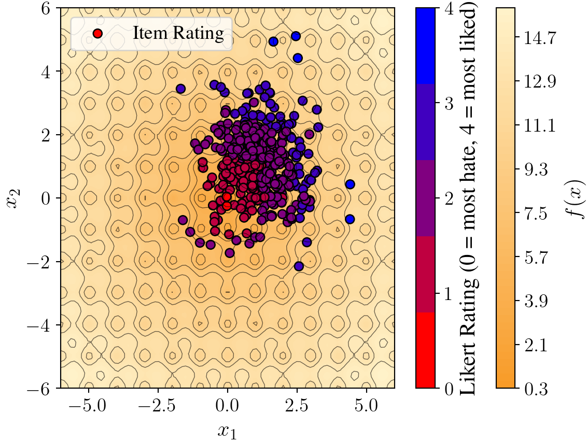

import torch
from botorch.test_functions.synthetic import Ackley
import matplotlib.pyplot as plt
import numpy as np
from matplotlib.colors import LinearSegmentedColormap
custom_cmap = LinearSegmentedColormap.from_list("custom_ackley", ["#F89B28", "#FFF2C9"], N=100)
torch.manual_seed(0)
from tueplots import bundles
bundles.icml2024()
plot_config = bundles.icml2024(usetex=True, family="serif")
plot_config.update({
"font.size": 14, # Increase base font size
"axes.labelsize": 16, # Increase axis label font size
"xtick.labelsize": 14, # Increase x-axis tick labels
"ytick.labelsize": 14, # Increase y-axis tick labels
"legend.fontsize": 14, # Increase legend font size
"axes.titlesize": 16, # Increase title font size
})
# Visualize the Ackley function as a heat map
def draw_surface():
x = np.linspace(-6, 6, 100)
y = np.linspace(-6, 6, 100)
X, Y = np.meshgrid(x, y)
Z = utility_fn(torch.tensor(np.c_[X.ravel(), Y.ravel()])).reshape(X.shape)
plt.figure(figsize=(6, 4.5))
contour = plt.contourf(X, Y, Z.numpy(), 50, cmap=custom_cmap)
plt.contour(X, Y, Z.numpy(), levels=15, colors='black', linewidths=0.5, alpha=0.6)
plt.colorbar(contour, label=r'$f(x)$')
plt.xlabel(r'$x_1$')
plt.ylabel(r'$x_2$')
d = 2
n_items = 400
utility_fn = Ackley(dim=d)
items = torch.randn(n_items, d) + torch.ones(n_items, d)
utilities = utility_fn(items).numpy()2 Chapter 2
3 Models of Preferences and Decisions
Fullscreen Part 1 Fullscreen Part 2
Human preference modeling aims to capture humans’ decision making processes in a probabilistic framework. Many problems would benefit from a quantitative perspective, enabling an understanding of how humans engage with the world. In this chapter, we will explore how one can model human preferences, including different formulations of such models, how one can optimize these models given data, and considerations one should understand to create such systems. We describe these assumptions in Section 3.1.
3.1 The Construction of Preference
3.1.1 Axiom 1: Construction of Choices Set
Human preference models model the preferred choices amongst a set of options. For example, this could be modeling which meal from a set of options a person will most likely choose. Preference models must enumerate the set of all possible choices included in a human decision. As such, we must ensure that the choices we enumerate capture the entire domain (collectively exhaustive) but are distinct (mutually exclusive) choices. A discrete set of choices is a constraint we canonically impose to ensure we can tractably model preferences and aptly estimate the parameters of preference models. We assume that if a new option is added to the choice set, the relative probabilities of choosing between the original options remain unchanged. This is known as Independence of Irrelevant Alternatives (IIA) property from Luce’s axiom of choices (Luce 1977).
3.1.2 Axiom 2: Preference Centers around Utility
Human preference models are centered around the notion of utility, a scalar quantity representing the benefit or value an individual attains from selecting a given choice. We assume that the underlying utility mechanism of a human preference model captures the final decision output from a human. We use the notation \(u_{i,j}\) as the utility of person \(i\) choosing item \(j\). The utility is a random variable, decomposing into true utility \(u_{i,j}^*\) and a random noise \(\epsilon_{i,j}\): \(u_{i,j} = u_{i,j}^* + \epsilon_{i,j}\). True utility can further be decomposed into user-specific utility \(\theta_i\) and item-specific utility \(z_j\): \(u_{i,j}^* = \theta_i + z_j\). From this decomposition, it is straightforward that, for a single users, only the relative difference in utility matters to predict the choice among options and the scale of utilities is important when comparing across user.
3.1.3 Axiom 3: Rationality
Modeling decision-making must also take into account rationality. Rationality assumption provides a framework for predicting and modeling human behavior by outlining the principles that guide decision-making processes (Keisler and Lee 2003). By incorporating different types of rationality, researchers can create more accurate and realistic models that reflect the complexities of human decision-making (Miljkovic 2005; Simon 1972). Perfect rationality posits that individuals make decisions that maximize their utility, assuming they have complete information and the cognitive ability to process this information to make optimal choices (Miljkovic 2005). Numerous studies have shown that this assumption frequently fails to describe actual human behavior, as individuals do not always act in ways that maximize their utility due to various constraints and biases (Miljkovic 2005). Bounded rationality acknowledges that individuals operate within the limits of their information and cognitive capabilities. Decisions are made using heuristics rather than through exhaustive analysis, reflecting the practical constraints of real-world decision-making (Simon 1972). Bounded rationality acknowledges that decisions are influenced by noise, resulting in probabilistic choice behavior: while individuals aim to maximize their utility, random factors can lead to deviations from perfectly rational choices (Miljkovic 2005).
Bounded rationality can be operationalized through Boltzmann rationalit. It addresses the likelihood of a human selecting an option \(o\) from a set \(O\). Desirability is represented by a value function \(v : O \rightarrow \mathbb{R}^+\), with the selection probability calculated as \(P(o) = \frac{v(o)}{\sum_{o' \in O} v(o')}\). Assuming there is an underlying reward for each option \(R(o) \in \mathbb{R}\) such that \(v(o) = e^{R(o)}\), we get \(P(o) = \frac{e^{R(o)}}{\sum_{\bar{o} \in \mathcal{O}} e^{R(\bar{o})}}\). Essentially, “A human will act out a trajectory with a probability proportional to the exponentiated return they receive for the trajectory.” When choices involve trajectories \(\xi \in \Xi\) (sequences of actions), the reward \(R\) is typically a function of a feature vector \(\phi : \Xi \rightarrow \mathbb{R}^k\), and the probability density is given by \(p(\xi) = \frac{e^{R(\phi(\xi))}}{\int_{\Xi} e^{R(\phi(\bar{\xi}))} d\bar{\xi}}\).
Boltzmann rationality has the “duplicates problem,” where there is no concept of similar actions (e.g., choosing between using a car or a train for transportation, with no particular preference). The probability of making the decision is 50% for either option. However, if we now have 100 cars, under Boltzmann, we would have a 99% probability of choosing a car, which is unrealistic. To address this issue, various extensions have been proposed. One such extension is the attribute rule, which interprets options as bundles of attributes. In this rule, attributes \(X\) are associated with options, and they have desirability values \(w(x)\). An attribute intensity function \(s(x, o)\) indicates the degree to which an attribute is expressed in an option. The probability of choosing option \(o\) is
\[P(o) = \sum_{x \in \mathcal{X}_o} \frac{w(x)}{\sum_{\bar{x} \in \mathcal{X}_o} w(\bar{x})} \cdot \frac{s(x, o)}{\sum_{\tilde{o} \in \mathcal{O}} s(x, \bar{o})}\]
This equation describes a two-step process where an attribute \(x \in X_O\) is first chosen according to a Boltzmann-like rule and then an option \(o \in O\) with that attribute is selected using another Boltzmann-like rule. This approach handles duplicates gracefully by effectively creating a two-layer hierarchy in choosing an option. Boltzmann rationality finds practical applications in various fields, particularly in reinforcement learning, where it models decision-making in uncertain environments. It also applies to trajectory selection, where the probability of a sequence of actions (trajectory) is proportional to the exponential return. These applications enhance the accuracy of models that interact with or predict human behavior, making Boltzmann Rationality a vital component of the models of interaction.
We next explore a case study to deepen our understanding of rationality: Limiting Errors due to Similar Selection (LESS) (Bobu et al. 2020). LESS takes inspiration from the attribute rule and extends it to continuous trajectories (Bobu et al. 2020). The key insight is that instead of creating “attributes”, which group together similar discrete options, it introduces a similarity metric on the space of continuous actions, thereby creating similar groupings on trajectories. The LESS similarity metric could be defined in trajectory space, where the trajectory is some theoretical notion of all states and actions one passes through over time. However, it is instead defined on the measured feature vector \(\phi(\xi)\) associated with the agent’s trajectory \(\xi\). In practice, one can never measure the exact trajectory with perfect fidelity. The feature vector will almost necessarily map in a one-to-many fashion with trajectories. Formally, let \(\phi \in \Phi\) be the set of all possible feature vectors \(\xi \in \Xi\) the set of all trajectories. The set of feature vectors belonging to a set of trajectories \(\Xi' \subseteq \Xi\) is \(\Phi_{\Xi'}\). We begin with equation (4) and substitute our similarity metric on feature vectors of trajectories.
\[\begin{aligned} P(\xi) = \frac{e^{R(\phi(\xi))}}{\sum_{\bar{\phi} \in \Phi_{\Xi}} e^{R(\hat{\phi})}} \cdot \frac{s(\phi(\xi), \bar{\xi})}{\sum_{\hat{\xi} \in \Xi} s(\phi(\xi), \bar{\xi})} \end{aligned}\]
The probability of choosing trajectory \(\xi\) is proportional to the exponentiated reward for the agent’s measured trajectory \(\phi(\xi)\), normalized by the sum of all rewards over all possible measured trajectories. The second half of the product is a normalization factor based on how similar the current trajectory is to other trajectories in feature space. We can define the similarity function as an indicator function, where \(s(x, \xi) = 1\) only if \(x = \phi(\xi)\). That means that multiple trajectories with the same feature vector will effectively be considered a single option. Thus, we achieve the “bundling” of trajectories, in the same way that the attribute rule bundled options under different attributes.
However, setting the similarity metric as an indicator function isn’t sufficiently flexible. We want a proper metric that acts more as a continuous distance over the feature space. We instead define \(s\) to be a soft similarity metric \(s : \Phi \times \Xi \rightarrow \mathbb{R}^+\) with the following properties:
\(s(\phi(\xi), \xi) = \max_{x \in \phi, \bar{\xi} \in \Xi} s(x, \hat{\xi}) \forall (\xi \in \Xi)\)
Symmetric: \(s(\phi(\xi), \bar{\xi}) = s(\phi(\bar{\xi}), \xi)\)
Positive Semidefinite: \(s(x, \xi) \geq 0\)
Using this redefined similarity metric \(s\), we extend (5) to be a probability density on the continuous trajectory space \(\mathcal{E}\), as in (3).
\[p(\hat{\xi}) = \frac{\frac{e^{R(\phi(\xi))}}{\int_{\Xi} s(\phi(\xi), \bar{\xi}) d\bar{\xi}}}{\int_{\Xi}\frac{e^{R(\phi(\hat{\xi}))}}{\int_{\Xi} s(\phi(\hat{\xi}), \bar{\xi}) d\bar{\xi}}d\hat{\xi}} \propto \frac{e^{R(\phi(\hat{\xi}))}}{\int_{\Xi} s(\phi(\xi), \bar{\xi}) d\bar{\xi}}\]
Under this formulation, the likelihood of selecting a trajectory is inversely proportional to its feature-space similarity with other trajectories. This de-weights similar trajectories, which is the desired effect for our LESS model of human decision-making. This means, though, that the “trajectory bundle” of similar trajectories still has a reasonable probability of being chosen.
3.1.4 Axiom 4: Preference captures decision-making
Human preferences are classified into two categories: revealed preferences and stated preferences.
Revealed preferences are those one can observe retroactively from existing data. The implicit decision-making knowledge can be captured via learnable parameters and their usage in models which represent relationships between input decision attributes that may have little human interpretability, but enable powerful models of human preference. For health coaching, we may have information about which foods an individual has chosen previously in different contexts, allowing us to build a model from their decisions. Such data may be easier to acquire and can reflect real-world outcomes (since they are, at least theoretically, inherently based on human preferences). However, if we fail to capture sufficient context in such data, human preference models may not sufficiently capture human preferences.
Stated preferences are those individuals explicitly indicate in potentially experimental conditions. The explicit knowledge may be leveraged by including inductive biases during modeling (for example, the context used in a model) which are reasonable assumptions for how a human would consider a set of options.This may include controlled experiments or studies. This may be harder to obtain and somewhat biased, as they can be hypothetical or only accurately reflect a piece of the overall context of a decision. However, they enable greater control of the decision-making process.
3.2 Methods for Collecting Preference Data
Next, we explore various mechanisms by which humans can express their preferences, including pairwise sampling, rank-order sampling, rating-scale sampling, best-worst scaling, and multiple-choice samples. In pairwise sampling, participants compare two options to determine which is preferred. One of the major advantage of this method is low cognitive demand for rater. Its disavantage is the limited amount of information content elicited by a sample. We will familiarize ourselves with pairwise sampling through a simulation. Each item \(i\) is represented by a \(d\) dimentional vector \(x_i\). The user has a latent utility function \(f\) that they use to compute the latent utility of item from the features. In this simulation, the latent utility function is the Ackley function . In the surface below, blue and red points corresponds to accept or reject points.
preference = (utilities > utilities.mean())
with plt.rc_context(plot_config):
draw_surface()
plt.scatter(items[:, 0], items[:, 1], c=preference, cmap='coolwarm', s=5, alpha=0.5)
plt.show()
Rating-scale sampling, such as the Likert scale, is a method in which participants rate items on a fixed-point scale (e.g., 1 to 5, “Strongly Disagree” to “Strongly Agree”) to measure levels of preference towards items (Harpe 2015). Participants can also mark a point on a continuous rating scale to indicate their preference or attitude. Commonly used in surveys, product reviews, and psychological assessments, this method provides a more nuanced measure than discrete scales. Rating-scale sampling is simple for participants to understand and use, provides rich data on the intensity of preferences, and is flexible enough for various measurements (e.g., agreement, satisfaction) (Harpe 2015). However, rating-scale sampling methods also have limitations. Ratings can be influenced by personal biases and interpretations of scales, leading to subjectivity. There is a central tendency bias, where participants may avoid extreme ratings, resulting in clustering responses around the middle. Different participants might interpret scale points differently, and fixed-point scales may not capture the full nuance of participants’ preferences or attitudes (Harpe 2015).
# Custom discrete colormap: red for lowest rating (0) to blue for highest rating (4)
likert_cmap = LinearSegmentedColormap.from_list("likert_scale", ["red", "blue"], N=5)
# Normalize utilities to get ratings from 0 to 4
min_util, max_util = utilities.min(), utilities.max()
# Avoid division by zero in case all utilities are equal
if max_util - min_util > 0:
normalized = (utilities - min_util) / (max_util - min_util)
else:
normalized = torch.zeros_like(utilities)
ratings = np.round(normalized * 4).squeeze() # discrete ratings 0,1,2,3,4
with plt.rc_context(plot_config):
draw_surface()
# Plot items with their Likert rating
scatter = plt.scatter(
items[:, 0], items[:, 1], c=ratings, cmap=likert_cmap,
s=40, edgecolor='k', label='Item Rating'
)
# Create a colorbar with discrete ticks for ratings 0 to 4
cbar = plt.colorbar(scatter, ticks=[0, 1, 2, 3, 4])
cbar.set_label('Likert Rating (0 = most hate, 4 = most liked)')
plt.legend()
plt.show()
Next, we will see that we can trading cognitive demand for rater to elicit more nuance preference information. For example, Rank-order sampling captures human preferences by having participants rank items from most to least preferred. Used in voting, market research, and psychology, it provides rich preference data but is more complex and cognitively demanding than pairwise comparisons, especially for large item sets. Participants may also rank inconsistently (Ragain and Ugander 2019).
n_pairs = 10000 # number of random pair comparisons
pair_indices = torch.randint(0, n_items, (n_pairs, 2))
mask = pair_indices[:, 0] != pair_indices[:, 1]
pair_indices = pair_indices[mask]
scores = torch.zeros(n_items)
for i, j in pair_indices:
if utilities[i] > utilities[j]:
scores[i] += 1 # win for point i
scores[j] -= 1 # loss for point j
else:
scores[i] -= 1 # loss for point i
scores[j] += 1 # win for point j
preferred = scores > 0
non_preferred = scores < 0
with plt.rc_context(plot_config):
draw_surface()
plt.scatter(items[preferred, 0], items[preferred, 1], marker='+', c='blue', s=40, label='Preferred')
plt.scatter(items[non_preferred, 0], items[non_preferred, 1], marker='_', c='red', s=40, label='Non-preferred')
plt.legend()
plt.show()
In Best-worst scaling (BWS), participants are presented with items and asked to identify the most and least preferred options. The primary objective of BWS is to discern the relative importance or preference of items, making it widely applicable in various fields such as market research, health economics, and social sciences (Campbell and Erdem 2015). BWS provides rich data on the relative importance of items, helps clarify preferences, reduces biases found in traditional rating scales, and results in utility scores that are easy to interpret. However, BWS also has limitations, including potential scale interpretation differences among participants, and design challenges to avoid biases, such as the order effect or the context in which items are presented.
Multiple-choice sampling involve participants selecting one option from a set of alternatives. Multiple-choice sampling is simple for participants to understand and reflect on realistic decision-making scenarios where individuals choose one option from many. It is beneficial in complex choice scenarios, such as modes of transportation, where choices are not independent (Bolt and Wollack 2009). Multiple-choice sampling often relies on simplistic assumptions such as the independence of irrelevant alternatives (IIA), which may not always hold true. This method may also fail to capture the variation in preferences among different individuals, as it typically records only the most preferred choice without accounting for the relative importance of other options.
3.3 Models of Choices
3.3.1 Binary Choice Model
Binary choice model is centered around one item. The model predicts, for that option, after observing user choices in the past, whether that option will be chosen or not. We use binary variable \(y \in \{0, 1\}\) to represent whether that choice will be picked by the user in the next phase of selection. We denote \(P = \mathbb{P}(y = 1)\). We can formally model \(y\) as a function of the utility of the positive choice: \(y = \mathbb{I}[U>0]\). We explore two cases based on the noise distribution. \(\psi\) is the logistic function or the standard normal cummulative distribution function if noise follows logistic distribution and the standard normal distribution, repsectively: \[ \mathbb{P}(u_{i,j} > 0) = \mathbb{P}(u_{i,j}^* + \epsilon > 0) = 1 - \mathbb{P}( \epsilon < -u_{i,j}^*) = \psi(u_{i,j}^*). \]
3.3.2 Bradley-Terry Model
The Bradley-Terry model compares the utility of choice over all others (Bradley and Terry 1952) in the set of \(J\) choices \(i \in \{1, 2, \dots, J\}\). Each choice can also have its unique random noise variable representing the unobserved factor, although we can also choose to have all choices’ unobserved factors follow the same distribution (e.g. independent and identically distributed, IID). The noise is represented as an extreme value distribution, although we can choose alternatives such as a multivariate Gaussian distribution: \(\epsilon \sim \mathcal{N}(0, \Sigma)\). If \(\Sigma\) is not a diagonal matrix, we effectively model correlations in the noise across choices, enabling us to avoid the IID assumption. In the case of the extreme value distribution, we model the probability of a user preferring choice \(i\), which we denote as \(P_i = Z^{-1}\exp(u_{i,j}^*)\) where \(Z = \sum_{j = 1}^{J} \exp(u_{i,j}^*)\).
3.3.3 Ordered Preferences Model
Previous models do not leverage information about ordering of the available options a human can choose from: all choices were treated as independent by the model. The model aims to capture how an individual chooses between them. However, in many cases, we may introduce an inductive bias based on information about the options. For example, in a study for stated preferences, a user may be able to choose from intricately dependent options such as very poor, poor, fair, good, and great. In this case, it can be useful to include this bias in our model to represent a human’s decision-making process better. Instead of comparing choices against alternatives, we can focus on a single example and use additional parameters to define classification criteria based on the utility determined by the model. Let us suppose we have a single example with attributes \(z_i\), and wish to know which of \(J\) predefined options an individual will choose from. We can define \(J - 1\) parameters, which act as thresholds on the utility computed by \(u_i = u_{i,j}^*\) to classify the predicted choice between these options. For example, if there are 3 predefined options, we can define parameters \(a, b \in \mathbb{R}\) such that
\[ y_i = \begin{cases} 1 & u < a \\ 2 & a \le u < b \\ 3 & \text{else} \end{cases} \]
By assuming the noise distribution to be either logistic or standard normal, we have \[ \begin{split} \mathbb{P}(y_i = 1) & = \mathbb{P}(u < a) = \mathbb{P}(u_{i,j}^* + \epsilon < a) = \psi(a-u_{i,j}^*) \\ \mathbb{P}(y_i = 2) & = \mathbb{P}(a \le u < b) = \mathbb{P}(a - u_{i,j}^* \le \epsilon < b - u_{i,j}^*) = \psi(b-u_{i,j}^*) - \psi(u_{i,j}^*-a) \\ \mathbb{P}(y_i = 3) & = \mathbb{P}(u > b) = \mathbb{P}(u_{i,j}^* + \epsilon > b ) = \mathbb{P}( \epsilon > b - u_{i,j}^*) = \psi(b-u_{i,j}^*) \end{split} \]
3.3.4 Plackett-Luce Model
We can model an open-ended ranking of the available options with the Plackett-Luce model, in which we jointly model the full sequence of choice ordering (Plackett 1975). The general form models the joint distribution as the product of conditional probabilities, where each is conditioned on the preceding ranking terms. Given an ordering of \(J\) choices \(\{y_1, \dots, y_J\}\), we factorize the joint probability into conditionals. Each conditional follows the Bradley-Terry model: \[ \mathbb{P}(y_1, \dots, y_J) = \mathbb{P}(y_1) \cdot \mathbb{P}(y_2 | y_1) \cdot \dots \cdot \mathbb{P}(y_J | y_1, y_2, \dots y_{J - 1}) = \prod_{i = 1}^J \frac{\exp(u_{i,j}^*)}{\sum_{j \ge i} \exp(u_{i,j}^*)} \]
3.3.5 Ideal Point Model
The ideal point model uses distance functions to compute utility for individual-choice pairs (Huber 1976). Given vector representation \(z_i\) of choice \(i\) and a vector \(v_n\) representing an individual \(n\), we can use a distance function to model a stochastic utility function with the unobserved factors following a specified distribution: \(u_{n, i} = \texttt{dist}(z_i, v_n) + \epsilon_{n, i}\). We assume human preferences follow the choice with maximum utility: \(y_{n, i} = \mathbb{I}[u_{n, i} > u_{n, j} \ \forall i \ne j]\). The intuition is that vectors exist in a shared \(n\)-dimensional space, and as such we can use geometry to match choices whose representations are closest to that of a given individual. This model can often result in faster learning compared to non-geometric approaches (Jamieson and Nowak 2011; Tatli, Nowak, and Vinayak 2022) when equipped with a distance metric. Certain distance metrics, such as Euclidian distance or inner product, can easily be biased by the scale of vectors. A distance measure such as cosine similarity, which compensates for scale by normalizing the inner product of two vectors by the product of their magnitudes, can mitigate this bias yet may discard valuable information encoded by the length of the vectors. Beyond the distance metric alone, this model places a strong inductive bias that the individual and choice representations all share a common embedding space. In some contexts, this can be a robust bias to add to the model (Greiner 2005), but it is a key factor one must take into account before employing such a model, and is a key design choice for modeling.
3.4 Choices Aggregation
In many applications, human preferences must be aggregated across multiple individuals to determine a collective decision or ranking. This process is central to social choice theory, which provides a mathematical foundation for preference aggregation. Unlike individual preference modeling, which focuses on understanding how a single person makes decisions, social choice theory addresses the challenge of combining multiple preference profiles into a single, coherent outcome. One of the most widely used approaches to aggregating preferences is voting. A voting rule is a function that maps a set of individual preference rankings to a collective decision. The outcome of a vote is determined by a social choice function (SCF), which selects a winner based on the aggregated preferences. Several voting rules exist, each with different properties:
- Plurality Rule: Each voter assigns one point to their top choice, and the alternative with the most points wins.
- Borda Count: Voters rank all alternatives, and points are assigned based on the position in each ranking.
- Single Transferable Vote (STV): Voters rank choices, and rounds of elimination occur until a candidate has a majority.
- Condorcet Methods: The Condorcet winner is the option that would win in all pairwise comparisons against other alternatives (if one exists).
However, preference aggregation is not always straightforward. The Condorcet Paradox illustrates that no single alternative may be a clear winner due to cycles in majority preferences, violating transitivity. Additionally, different voting rules can yield different winners, highlighting the importance of selecting an appropriate aggregation method. A fundamental result in social choice theory is Arrow’s Impossibility Theorem, which states that when there are three or more alternatives, no voting system can simultaneously satisfy the following fairness criteria:
- Unanimity (Pareto efficiency): If all individuals prefer one option over another, the group ranking should reflect this.
- Independence of Irrelevant Alternatives (IIA): The relative ranking of two options should not be influenced by a third, unrelated option.
- Non-dictatorship: No single individual’s preference should always determine the group’s outcome.
Arrow’s theorem suggests that every fair aggregation method must compromise on at least one of these desirable properties. Additionally, the Gibbard-Satterthwaite Theorem proves that any deterministic voting rule that selects a single winner is either dictatorial (one person always determines the result) or manipulable (voters can strategically misrepresent their preferences to achieve a better outcome). While manipulation is theoretically possible, certain voting rules, such as STV, introduce computational complexity that makes strategic voting impractical in real-world scenarios.
Preference aggregation is also critical in reinforcement learning from human feedback (RLHF), where human judgments guide model training. Aggregating human preferences in RLHF faces challenges similar to traditional voting, such as inconsistencies in preferences and strategic bias. Several approaches address these challenges:
- Majority Voting: Simple aggregation by selecting the most preferred response.
- Weighted Voting: Adjusting vote weights based on expertise or trustworthiness.
- Jury Learning: A method that integrates dissenting opinions, ensuring that minority perspectives are not entirely disregarded.
- Social Choice in AI Alignment: Incorporating diverse human feedback to align AI behavior with a broad spectrum of human values.
These approaches highlight the interplay between human preference modeling and machine learning, where designing aggregation mechanisms that reflect collective human values is an ongoing research challenge.
While traditional social choice methods focus on aggregation, recent work in pluralistic alignment suggests alternative frameworks that preserve the diversity of human preferences rather than collapsing them into a single decision. Pluralistic AI systems aim to:
- Present a spectrum of reasonable responses instead of forcing a single choice.
- Allow steering towards specific perspectives while maintaining fairness.
- Ensure distributional pluralism, calibrating AI systems to diverse human viewpoints.
This perspective is particularly relevant in generative AI, where models trained on aggregated preferences may fail to capture the nuances of diverse human values.
Aggregating human preferences is a complex task, influenced by both mathematical constraints and strategic considerations. Voting-based methods provide well-studied mechanisms for aggregation, but they face fundamental limitations as outlined by Arrow’s and Gibbard-Satterthwaite’s theorems. Beyond traditional aggregation, emerging approaches in reinforcement learning and AI alignment seek to balance fairness, robustness, and pluralism. As machine learning systems increasingly interact with human preferences, designing aggregation frameworks that capture the richness of human decision-making remains an active and critical area of research.
3.5 Inferences
import torch
import torch.nn as nn
import torch.optim as optim
from torch.distributions import Bernoulli
from tqdm import tqdm
# Set device
device = torch.device("cuda" if torch.cuda.is_available() else "cpu")
# Number of users and items
num_users = 50
num_items = 100
# Generate user-specific and item-specific utilities
theta = torch.randn(num_users, device=device, requires_grad=True)
z = torch.randn(num_items, device=device, requires_grad=True)
# Generate observed choices using logistic function
probs = torch.sigmoid(theta[:, None] - z[None, :])
data = Bernoulli(probs=probs).sample()
# Mask out a fraction of the response matrix
mask = torch.rand_like(data) > 0.2 # 80% observed, 20% missing
data_masked = data.clone()
data_masked[~mask] = float('nan')
# Initialize parameters for EM algorithm
theta_est = torch.randn(num_users, device=device, requires_grad=True)
z_est = torch.randn(num_items, device=device, requires_grad=True)
# Optimizer
optimizer = optim.LBFGS([theta_est, z_est], lr=0.1, max_iter=20, history_size=10, line_search_fn="strong_wolfe")
def closure():
optimizer.zero_grad()
probs_est = torch.sigmoid(theta_est[:, None] - z_est[None, :])
loss = -(Bernoulli(probs=probs_est).log_prob(data) * mask).mean()
loss.backward()
return loss
# EM Algorithm
pbar = tqdm(range(100))
for iteration in pbar:
if iteration > 0:
previous_theta = theta_est.clone()
previous_z = z_est.clone()
previous_loss = loss.clone()
loss = optimizer.step(closure)
if iteration > 0:
d_loss = (previous_loss - loss).item()
d_theta = torch.norm(previous_theta - theta_est, p=2).item()
d_z = torch.norm(previous_z - z_est, p=2).item()
grad_norm = torch.norm(optimizer.param_groups[0]["params"][0].grad, p=2).item()
grad_norm += torch.norm(optimizer.param_groups[0]["params"][1].grad, p=2).item()
pbar.set_postfix({"grad_norm": grad_norm, "d_theta": d_theta, "d_z": d_z, "d_loss": d_loss})
if d_loss < 1e-5 and d_theta < 1e-5 and d_z < 1e-5 and grad_norm < 1e-5:
break
# Compute AUC ROC on observed and inferred data
from torchmetrics import AUROC
auroc = AUROC(task="binary")
probs_final = torch.sigmoid(theta_est[:, None] - z_est[None, :])
train_probs = probs_final[mask]
test_probs = probs_final[~mask]
train_labels = data[mask]
test_labels = data[~mask]
auc_train = auroc(train_probs, train_labels)
auc_test = auroc(test_probs, test_labels)
print(f"train auc: {auc_train}")
print(f"test auc: {auc_test}")train auc: 0.8092435598373413
test auc: 0.7760056257247925References
Bobu, Andreea, Dexter R. R. Scobee, Jaime F. Fisac, S. Shankar Sastry, and Anca D. Dragan. 2020. “LESS Is More: Rethinking Probabilistic Models of Human Behavior.” https://doi.org/10.1145/3319502.3374811.
Bolt, Daniel M., and James A. Wollack. 2009. “Application of a Multidimensional Nested Logit Model to Multiple-Choice Test Items.” Journal of Educational Measurement 46 (3): 181–98. https://doi.org/10.1111/j.1745-3984.2009.00081.x.
Bradley, Ralph Allan, and Milton E. Terry. 1952. “Rank Analysis of Incomplete Block Designs: I. The Method of Paired Comparisons.” Biometrika 39 (3/4): 324–45. http://www.jstor.org/stable/2334029.
Campbell, Danny, and Seda Erdem. 2015. “Position Bias in Best-Worst Scaling Surveys: A Case Study on Trust in Institutions.” American Journal of Agricultural Economics 97 (2): 526–45. https://doi.org/10.1093/ajae/aau112.
Greiner, James. 2005. “Ideal Points.” Harvard IQSS Blog. https://blogs.iq.harvard.edu/ideal_points_1.
Harpe, Spencer E. 2015. “How to Analyze Likert and Other Rating Scale Data.” Currents in Pharmacy Teaching and Learning 7 (5): 836–50. http://dx.doi.org/10.1016/j.cptl.2015.08.001.
Huber, Joel. 1976. “Ideal Point Models of Preference.” In Advances in Consumer Research, 03:138–42. Association for Consumer Research.
Jamieson, Kevin G, and Robert Nowak. 2011. “Active Ranking Using Pairwise Comparisons.” In Advances in Neural Information Processing Systems, edited by J. Shawe-Taylor, R. Zemel, P. Bartlett, F. Pereira, and K. Q. Weinberger. Vol. 24. Curran Associates, Inc. https://proceedings.neurips.cc/paper_files/paper/2011/file/6c14da109e294d1e8155be8aa4b1ce8e-Paper.pdf.
Keisler, H. Jerome, and Byung Soo Lee. 2003. “Common Assumption of Rationality.” Economic Theory Journal 30 (2): 123–45.
Luce, R.Duncan. 1977. “The Choice Axiom After Twenty Years.” Journal of Mathematical Psychology 15 (3): 215–33. https://doi.org/10.1016/0022-2496(77)90032-3.
Miljkovic, Dragan. 2005. “Rational Choice and Irrational Individuals or Simply an Irrational Theory: A Critical Review of the Hypothesis of Perfect Rationality.” The Journal of Socio-Economics 34 (5): 621–34. https://doi.org/10.1016/j.socec.2003.12.031.
Plackett, R. L. 1975. “The Analysis of Permutations.” Journal of the Royal Statistical Society. Series C (Applied Statistics) 24 (2): 193–202. http://www.jstor.org/stable/2346567.
Ragain, Stephen, and Johan Ugander. 2019. “Choosing to Rank.” arXiv Preprint arXiv:1809.05139. https://arxiv.org/abs/1809.05139.
Simon, Herbert A. 1972. “Theories of Bounded Rationality.” In Decision and Organization, edited by C. B. McGuire and Roy Radner, 161–76. North-Holland Publishing Company.
Tatli, Gokcan, Rob Nowak, and Ramya Korlakai Vinayak. 2022. “Learning Preference Distributions from Distance Measurements.” In 2022 58th Annual Allerton Conference on Communication, Control, and Computing (Allerton), 1–8. https://doi.org/10.1109/Allerton49937.2022.9929404.